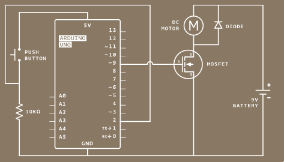
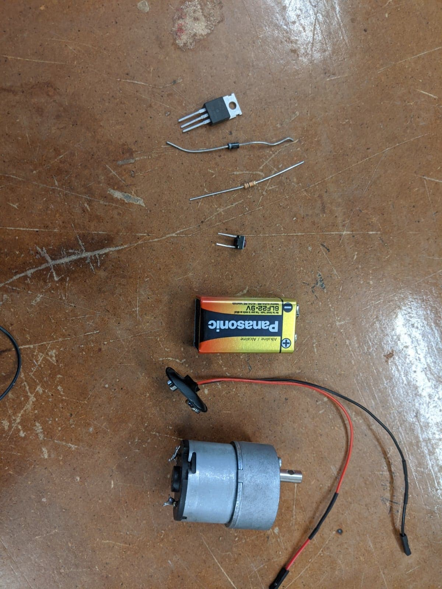
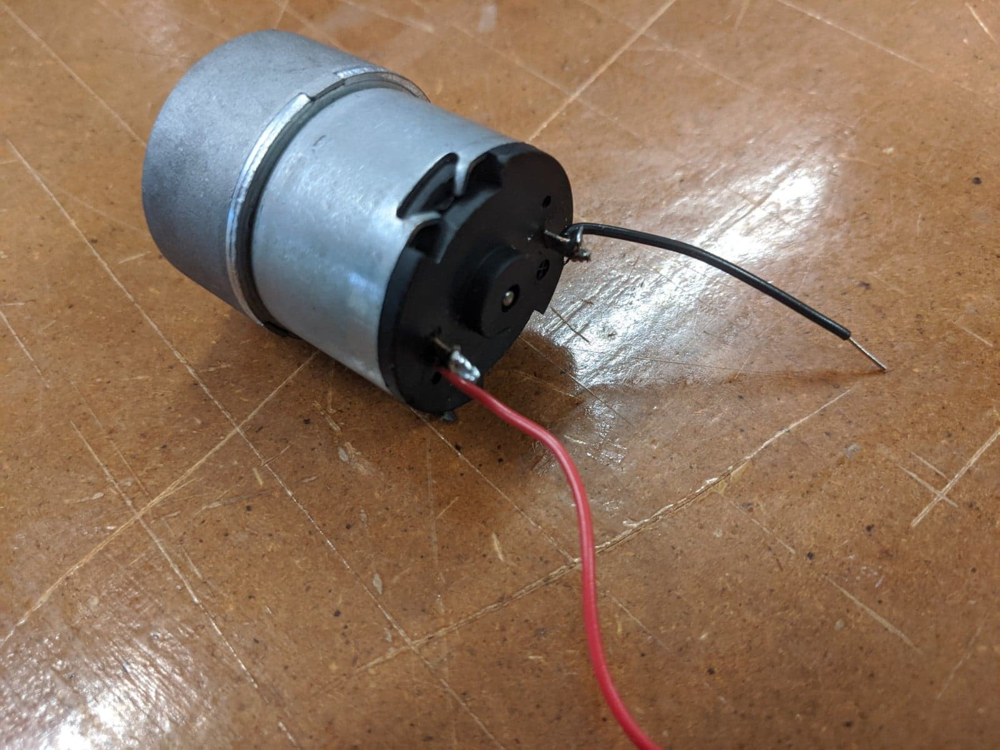
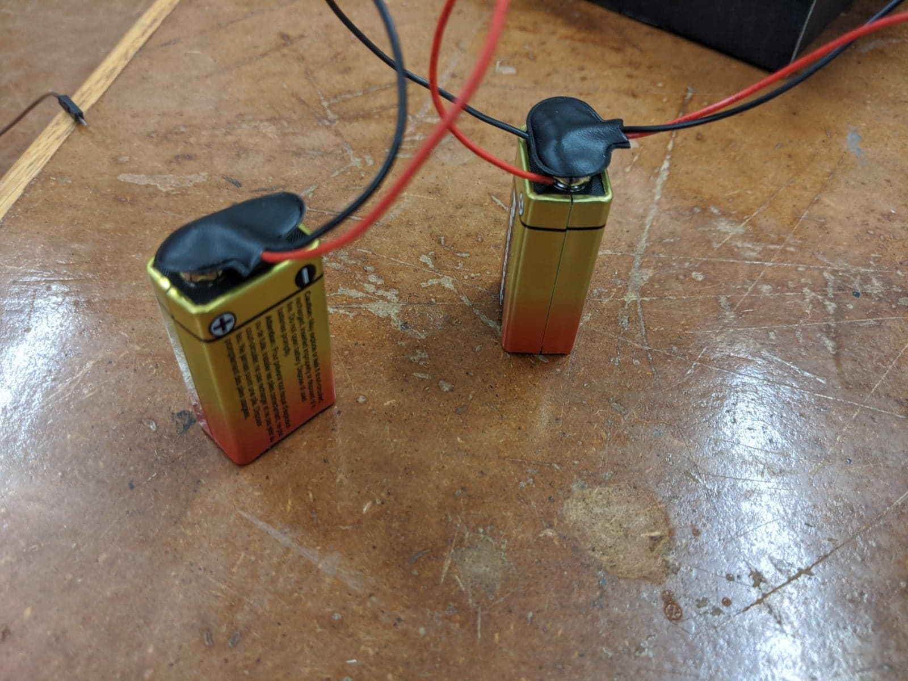
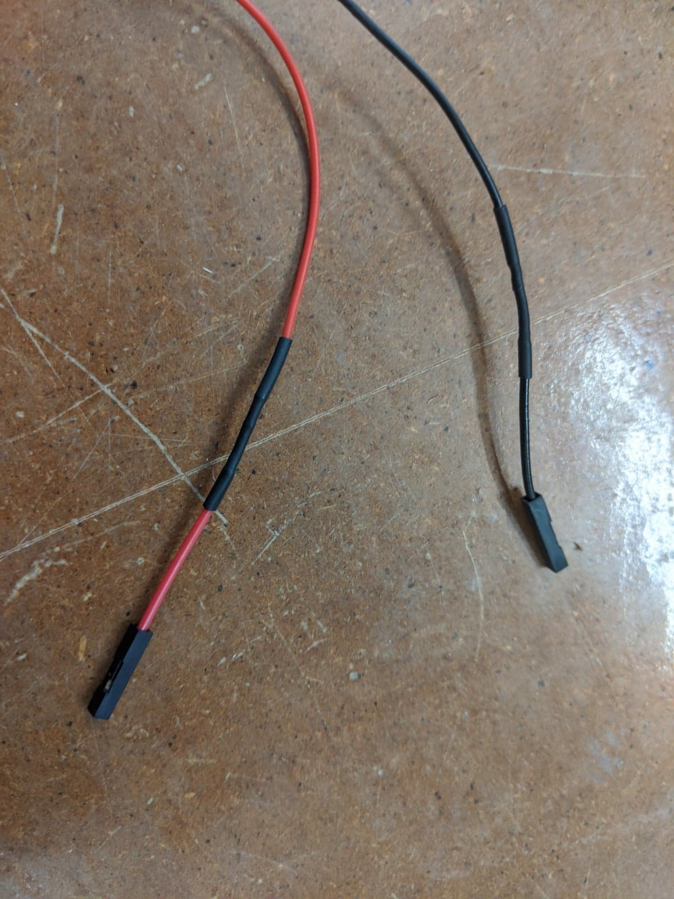
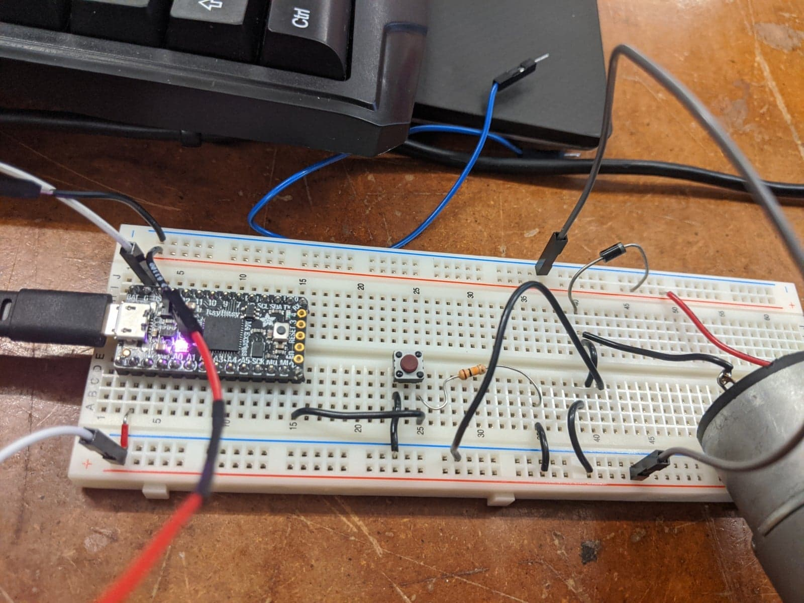

Getting Arduino Setup
At first, my Arduino board wouldn’t work, even after installing packages with Board Manager for Adafruit SAMD. While code would compile fine in the IDE, whenever I tried to upload to the board I got the error “Permission Denied.” In order to solve this problem, I investigated the permissions on the port I had plugged the device into. By running
ls -l /dev/ttyACM0
I found that the group permissions for the port was set to the group
uucp. My user (sean) was not in this group so I ran sudo usermod -aG uucp sean to add myself to this group as I run arch linux. On other systems,
this command will differ but the general solution was to add my user to
the group with permissions to access the port. An alternative solution
could have been to change the user group with permission to the port, for
example to all users, with chown root:users /dev/ttyACM0.
Self Activating Motor
For this project, I wanted to make a motor that was capable of using momentum to press a button and turn itself on momentarily. After it turned far enough that the button wasn’t pressed, it would turn off and only its momentum would be left to carry it to hit the button again.
To start out making this, I found a simple transistor-driven motor project in the Arduino starter guide
The circuit diagram is pretty simple and the code is just as simple:

The circuit operates by using a transistor as a switch to activate the motor. When the button is pressed, the loop code:
void loop(){
switchState = digitalRead(switchPin);
if (switchState == HIGH) {
digitalWrite(motorPin, HIGH);
} else {
digitalWrite(motorPin, LOW);
}
}
writes to the motor pin, pin 9, which increases the voltage into the gate pin of the transistor to allow current to flow to the motor.
I gathered the parts necessary:

In order to put the motor together I had to solder wires onto a geared motor. I chose the geared motor to spin more slowly. The first motor I soldered didn’t work when I plugged it into a voltage source. I should’ve tested it before soldering, whoops! Instead I had to unsolder another motor and resolder longer wires onto it.

Finally, the motor did not work with just one battery. Instead I had to add multiple batteries in parallel:

and use a heat gun to attach wires compatible with the breadboard to the battery cap:

After assembling everything, the circuit still didn’t work.

After much troubleshooting, I found that the transistor I used had too large a threshold voltage. Switching the transistor made the motor work.

This is as far as I got. The motor runs but I was unable to attach something that would hit the button in the right way. Going forward I hope to 3d print a part that allows the button to be pressed even without a full rotation.